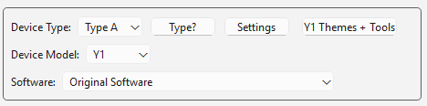

Restaurar · Innioasis Y1
Una ruta clara de regreso al software original.
Utilízalo cuando quieras abandonar un software personalizado, recuperar un reproductor que no se inicia o simplemente volver a la interfaz original.
Guía de instalación para su computadora
Restaure el software original en su Y1 con su computadora
Elija la guía para la computadora que está utilizando. Cada versión tiene la configuración de la plataforma, Updater CE pasos y el camino de regreso al stock.
Desde Rockbox u otro software personalizado
Una vez que la configuración relevante de Windows, macOS o Linux esté lista, Updater utiliza la misma instalación guiada para una restauración original que para una instalación de software personalizada. No es necesario eliminar manualmente Rockbox ni los archivos de otro software personalizado primero.
- Abra Innioasis Updater CE en su computadora (si aún no lo tiene instalado, Obtener Updater CE para ventanas, macos, o linux).
- conjunto Modelo del dispositivo a Y1.
- elegir Software original en Software (o usar Obtener en Updater CE).
- Elija la última versión estable Y1. El paquete manual habitual es
rom.zip. Type A cubre Y1 reproductores que se enviaron con la versión 2.0.0 o posterior del software original; Type B cubre los reproductores que se enviaron con una versión anterior del Software original y puede utilizar un nombre de paquete más específico. - Haga clic Instalar / Restaurar y espere a que se extraiga el paquete.

Conecte el Y1 cuando se le solicite
El sistema operativo cambia la configuración del Actualizador, no el proceso de restauración en sí. En cada plataforma, espere el mensaje en vivo antes de conectarse.
- Apague el reproductor por completo cuando el Actualizador lo solicite.
- Conecte el cable de datos USB solo cuando se le solicite.
- No toque el reproductor mientras se ejecuta la instalación.
- Desconéctese después del mensaje de éxito e inicie el Y1.
Si todavía no arranca
Repita la restauración una vez con el modelo, el tipo y la versión marcados. Si el Actualizador falla antes del mensaje USB, inspeccione la configuración de la computadora, el controlador o los permisos, el cable de datos y los archivos extraídos. Si falla después de detectar el Y1, utilice el guía de solución de problemas antes de pasar a la recuperación manual SP Flash Tool o MTKClient.